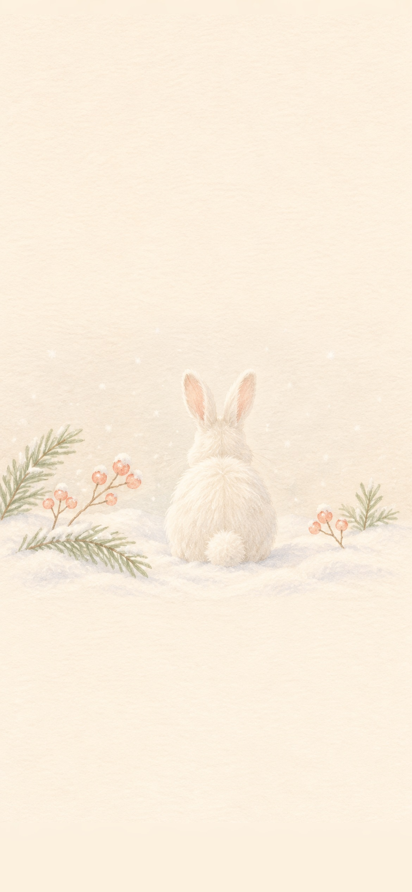
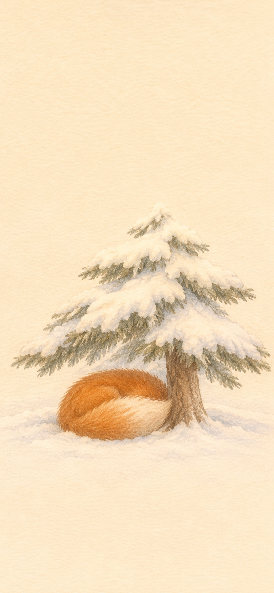
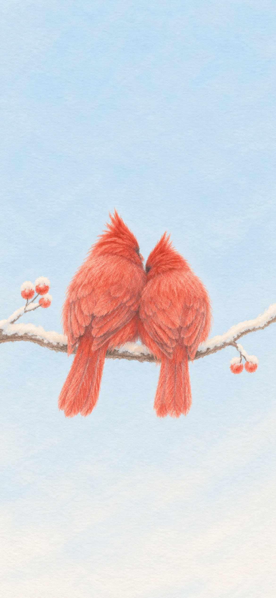

겨울 동물 배경화면 눈 토끼·잠든 여우·빨간 새
눈밭의 하얀 토끼, 소나무 아래 잠든 여우, 눈 쌓인 가지 위 빨간 새를 그린 겨울 수채화 배경화면이에요. 겨울 내내 쓸 수 있어요.
개인 폰 배경화면으로만 써 주세요. 다시 올리거나 파는 건 안 돼요.

눈밭의 하얀 토끼
내려받기1170×2532 · 382KB

잠든 여우
내려받기1170×2532 · 517KB

빨간 새 두 마리
내려받기1170×2532 · 555KB
갤럭시에서 받는 법
- 마음에 드는 그림의 내려받기를 눌러요.
- 갤러리 앱을 열면 '다운로드' 앨범에 들어 있어요.
- 사진을 열고 오른쪽 아래 ⋮ → 배경화면으로 설정 → 잠금 화면 또는 홈 화면을 골라요.
아이폰에서 받는 법
- 사파리로 이 페이지를 열어요.
- 그림을 길게 눌러 '사진 앱에 저장'을 눌러요. (내려받기 단추를 누르면 '파일' 앱의 다운로드 폴더에 저장돼요.)
- 사진 앱에서 그림을 열고 공유 → 배경화면으로 사용을 눌러요.
메뉴 이름은 기종과 버전에 따라 조금 다를 수 있어요. 잘 안 되면 블로그 댓글로 알려 주세요.